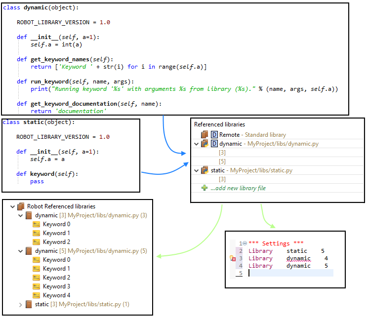

In order to provide validation and keyword assistance of external libraries (any library not bundled with RobotFramework but installed by pip or included in your test material) they need to be included in red.xml file in the Referenced libraries part. Additionally one may define arguments if they are required by the library.
There are few ways to include library into red.xml.
Main way to include libraries keywords in RED is done by autodiscovery mechanism. Mechanism works on two levels - during test edition and executed in Project Explorer on group of files and folders.
Every time when user edits test suite which has error markers on library declaration autodiscovery is executed when file is saved.
When there is a need to run autodiscovery manually on list of files, folders or whole project it can be achieved by using context menu in Project Explorer from Robot Framework option.

Lets focus on following example:

In the sample above there are two libraries imported. CalculatorLibrary.py is a custom user local
library placed in the same folder as suite file while Selenium2Library was installed by
pip.
Both libraries are not recognized by RED and validation places error markers on libraries name/path. Note the light bulb in error marker - it indicates that there is Quick Fix action available.
Click on the library name in test editor, open right click menu and choose Quick Fix or use CTRL+1 shortcut:

After selecting Discover option RED will search either PYTHONPATH or library file path.
If successful the library will be added to Referenced libraries section in red.xml

External Python libraries can be directly included to red.xml file by right clicking on file and using option:
Robot Framework -> Add Library to red.xml.
External library can be also added directly from red.xml editor:

In some scenarios, testware edit happens on different host than test runtime thus it is undesirable/unnecessary to install/import all libraries as on remote host. RobotFramework provides possibility to generate an xml file with list of keywords, this also provides agile test development where libraries are developed in parallel to test cases. Libdoc xml file can be included instead of external library file by using red.xml editor.
For more information about LibDoc please refer to http://robot-framework.readthedocs.io/en/latest/_modules/robot/libdoc.html?highlight=libdoc
From RED point of view there are two types of libraries: static and dynamic. The first one is a
library for which the specification does not depend upon parameters provided when importing it, while the latter
depends upon them. For example standard Remote library is a dynamic library because depending
what uri value will be provided when importing it the specification may be different (because
Remote may provided different keywords depending to which machine it will connect). All the other
standard libraries included into Robot are static libraries - for example no matter what parameters
will be provided when importing Telnet libraries the keywords will always be the same.
By default library entry in red.xml is marked as static. It is possible to change it manually in the editor.
For library marked as static RED will:
For library marked as dynamic RED will:
The diagram below presents the example for better overview:
The library dynamic uses Robot
dynamic API and provides different number of keywords printing different things depending on the value of
a argument in __init__ constructor. The static library however is a simple
library which may accept single argument and provides always a single keyword independently on value passed when
importing. Both libraries are added to red.xml - the first is marked as dynamic while the latter is not.
RED makes it possible to define two different values lists for constructor of dynamic library and
generates two specifications with both lists which is visible in Robot Referenced libraries folder in
Project explorer.
Finally when importing static library RED does not analyze arguments provided so it successfully
recognizes this import. However when importing dynamic library it will not recognize the import called
with 4 because it is only aware of specifications generated with [3] and [5].
Standard Remote library is a dynamic library for which one need to define possible arguments.
This is done similarly as for external libraries by providing different (possibly multiple) locations which will be used
when generating library specification and recognizing imports in tests suites.
Autodiscovering and libdoc generation preferences can be configured at
Window -> Preferences -> Robot Framework -> Libraries

Gevent library then please select Support Gevent
during autodiscovery checkbox. This will make it possible for autodiscovery mechanism to support such libraries.
Without this you may experience hanging both when looking for libraries as well as when keyword source
is being searched.
Whenever external library is changed (for instance new keyword is added) libdoc needs to be regenerated to provide changes on content assist and validation in RED. Since version 0.6.3 RED can automatically detect library change and regenerate libdoc (it can be switch off/on in preferences). This can be also done manually by right clicking on library in Project Explorer and selecting Reload action.
Manual library reloading can be also useful for finding libdoc generation errors. Whenever RED encounters libdoc generation problem, it will be shown as popup window from Python execution:

This indicates that some of the dependencies are missing on your local machine which may affect test suites execution. To verify you can try to execute libdoc in console:
python -m robot.libdoc <PATH_TO_LIBNAME> list